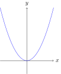
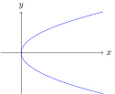
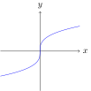
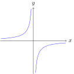

1.3
Grafik Persamaan
Definisi 1.3.1
Grafik suatu persamaan yang menghubungkan dua peubah $x$ dan $y$
adalah himpunan semua titik pada bidang-$xy$ yang
koordinat-koordinatnya merupakan anggota himpunan penyelesaian
persamaan tersebut.
- Grafik suatu persamaan pada bidang-$xy$ adalah simetriks terhadap sumbu-$x$ apabila $y$ diganti dengan $(-y)$ dalam persamaan tersebut akan menghasilkan persamaan yang ekuivalen.
- Grafik suatu persamaan pada bidang-$xy$ adalah simetriks terhadap sumbu-$y$ apabila $x$ diganti dengan $(-x)$ dalam persamaan tersebut akan menghasilkan persamaan yang ekuivalen.
- Grafik suatu persamaan pada bidang-$xy$ adalah simetriks terhadap titik asal $0$ apabila $x$ diganti dengan $(-x)$ dan $y$ diganti dengan $(-y)$ dalam persamaan tersebut akan menghasilkan persamaan yang ekuivalen.
- Grafik persamaan bentuknya mengikuti kurva dasar. Misalnya, $y-2=\sqrt{x}$ dan $y=\sqrt{x-1}$ memiliki bentuk yang sama karena memiliki kurva dasar yang sama, yaitu $y=\sqrt{x}$, hanya saja letaknya pada garis koordinat berbeda.
$y = x^2$

$y = -x^2$
$x = y^2$

$x = -y^2$
$y = \sqrt{x}$
$y = -\sqrt{x}$
$y = x^3$
$x = y^3$

$y=\dfrac{1}{x}$
$y=-\dfrac{1}{x}$

$y=\dfrac{1}{x^2}$
$y=-\dfrac{1}{x^2}$
Contoh 1
Diberikan titik-titik $A(-5,5)$, $B(2,5)$, $C(2,0)$, $D(2,-2)$,
$E(-5,-2)$, dan $F(-5,0)$, titik-titik manakah yang terletak pada
garis horizontal dan pada garis vertikal serta tentukan persamaannya.
Pembahasan
Titik-titik yang terletak pada garis horizontal yang sama akan
memiliki nilai koordinat $y$ yang sama, misalnya $A(-5,5)$ dan
$B(2,5)$ terletak pada garis horizontal $y=5$; $C(2,0)$ dan
$F(-5,0)$ terletak pada garis horizontal $y=0$; serta $D(2,-2)$
dan $E(-5,-2)$ terletak pada garis horizontal $y=-2$. Adapun
titik-titik yang terletak pada garis vertikal yang sama akan
memiliki nilai koordinat $x$ yang sama, misalnya $A(-5,5)$,
$E(-5,-2)$, dan $F(-5,0)$ terletak pada garis vertikal $x=-5$;
serta $B(2,5)$, $C(2,0)$, dan $D(2,-2)$ terletak pada garis
vertikal $x=2$.
Contoh 2
Di antara persamaan-persamaan berikut ini yang mempunyai grafik
simetrik terhadap sumbu-$x$ adalah:
- $x=9-5y^2$
- $xy=2$
- $y=|x|-2$
- $y=x^2+21$
- $x^2-y^2-4=0$
Pembahasan
Grafik pada bidang-$xy$ dikatakan simetrik terhadap sumbu-$x$ bila
ketika $y$ diganti $-y$, persamaan yang dihasilkan ekuivalen.
- $x=9-5(-y)^2 \implies x=9-5y^2$
- $x(-y)=2 \implies -xy=2$
- $-y=|x|-2$
- $-y=x^2+21$
- $x^2-(-y)^2-4=0 \implies x^2-y^2-4=0$
Latihan!
Tentukan di antara titik-titik berikut manakah yang terletak pada
grafik persamaan $y=2x^2-4$.
Dengan uji simetri, manakah persamaan-persamaan berikut ini
simetri terhadap sumbu $x$ atau simetri terhadap sumbu $y$ atau
simetri terhadap titik asal $O(0,0)$?
Diberikan $y=2+\sqrt{x-1}$ dan garis $l$ yang melalui titik
$(1,2)$ dan $(7,5)$. Buatlah sketsa kurva persamaan
$y=2+\sqrt{x-1}$ dan garis $l$.